ABOUT MY PROJECTS
Learn about my passions
Hardware
Sensors, circuits, and PCBs, oh my! As an electrical engineer these have been my key tools for innovating
Software
Web design especially has been a means for me to integrate both artistic and technological areas of design
Handicraft
Whether it be ceramics, sewing, wordwork, or welding, I like to dive into specialities that help me create
Art
Photography, watercolor, and pastels have been a meditative way for me to stay creative and present
My Experience
Although this site is meant to explore my projects, a more broad overview of them, as well as my work experience can be found on in my resume.
PORTFOLIO
Technical Projects
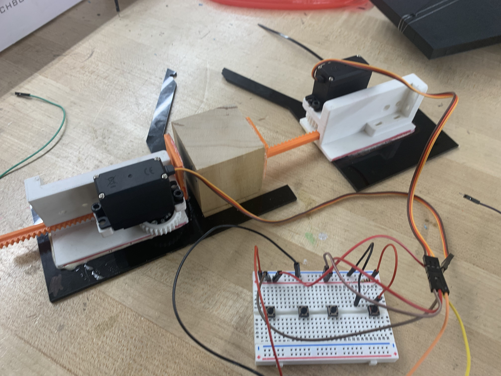
Bionic Hand
Robotics
A hand that performs the tasks of picking up delicate objects, holding items of different shapes and sizes, and stacking blocks.
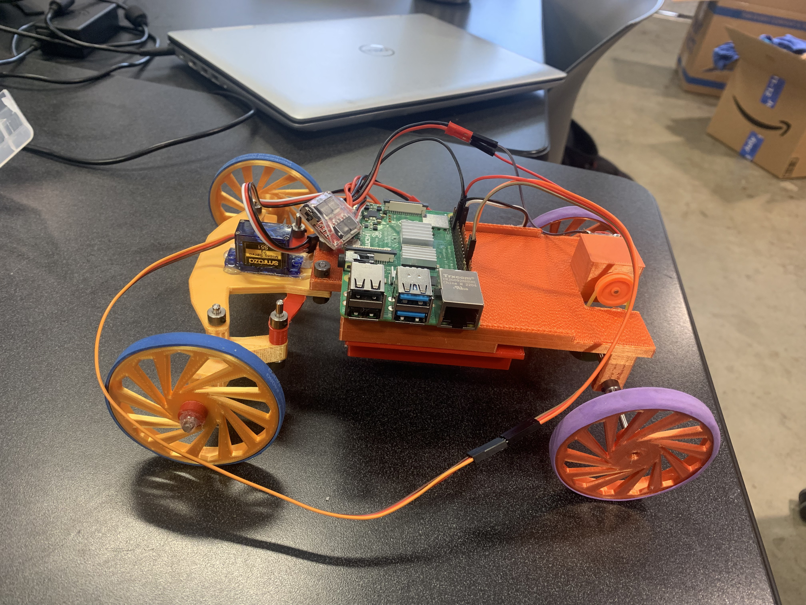
Pocket Racers
IEEE Project at UCLA
A small car designed to use computer vision and machine learning to navigate a track.
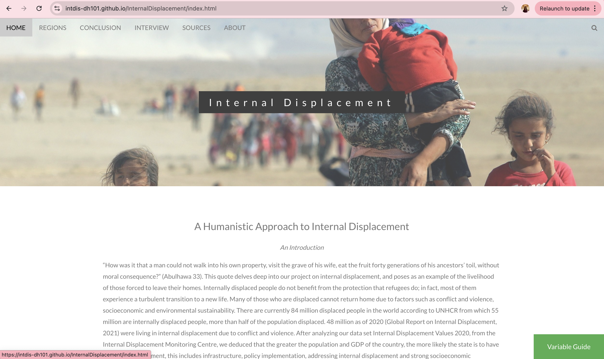
Internal Displacement
Website
A site that explores the humanistic effect of internal displacement through graphical data, case studies, and interative design
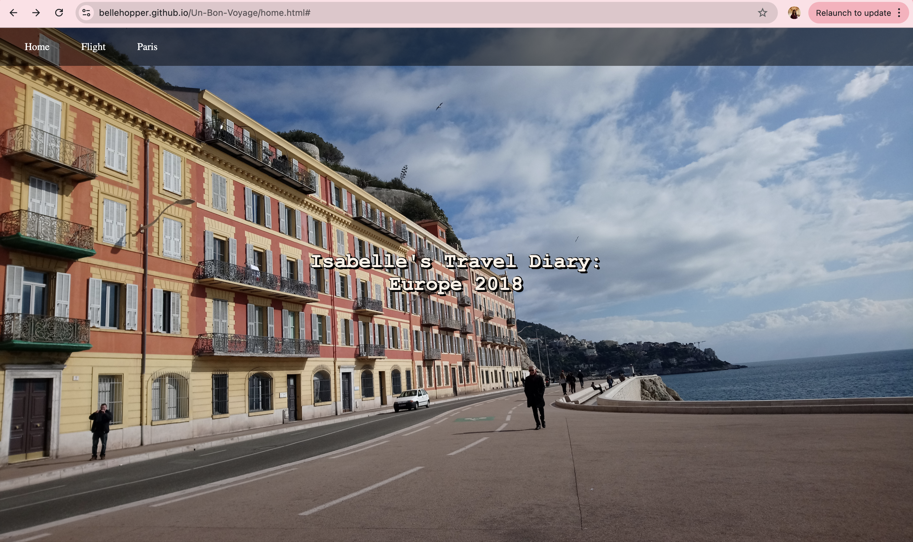
Travel Journal
Website
A site in which my trip to Europe is documented via digital "postcards" or photographs I took that flip over to reveal about my day.
Artistic Projects
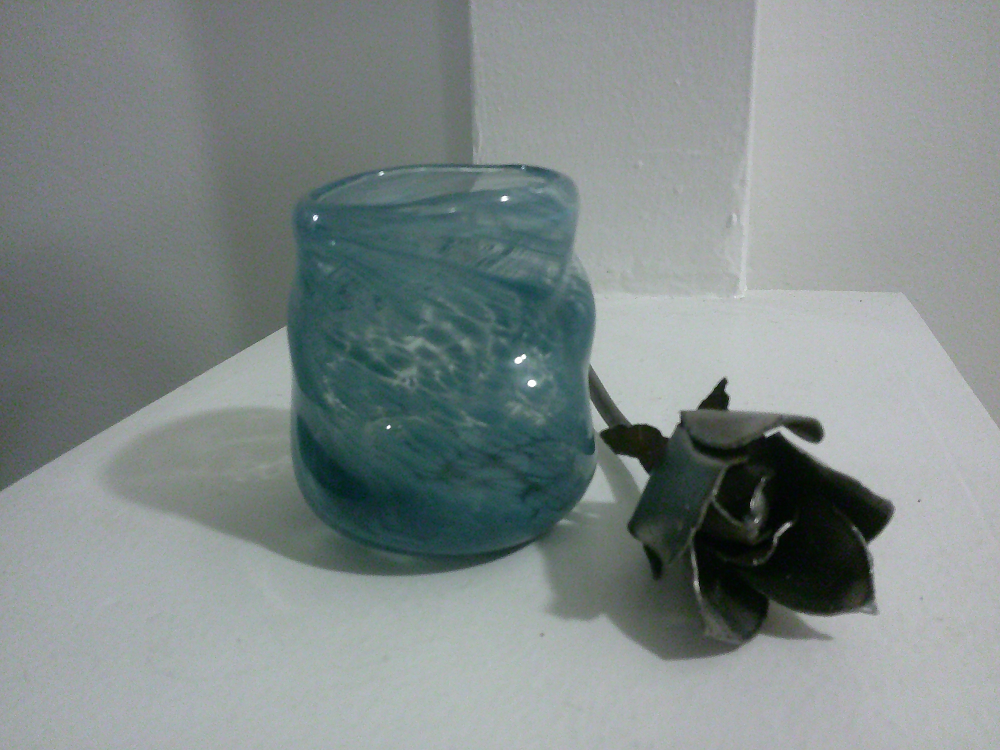
Welding and Glass
High Heat Crafts
My projects of a cup and a metal rose have been workshop experiences that have allowed me to delve into glassblowing, welding, and metal work.
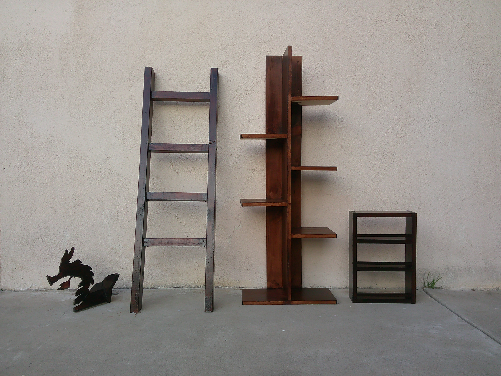
Woodwork
Tools
My projects of a a multi-shelf plant stand, a spice rack, a decorative ladder, and a dragon head wall mount had taught me how to use a miter saw, a table saw, a band saw, a jigsaw, and a router tool.
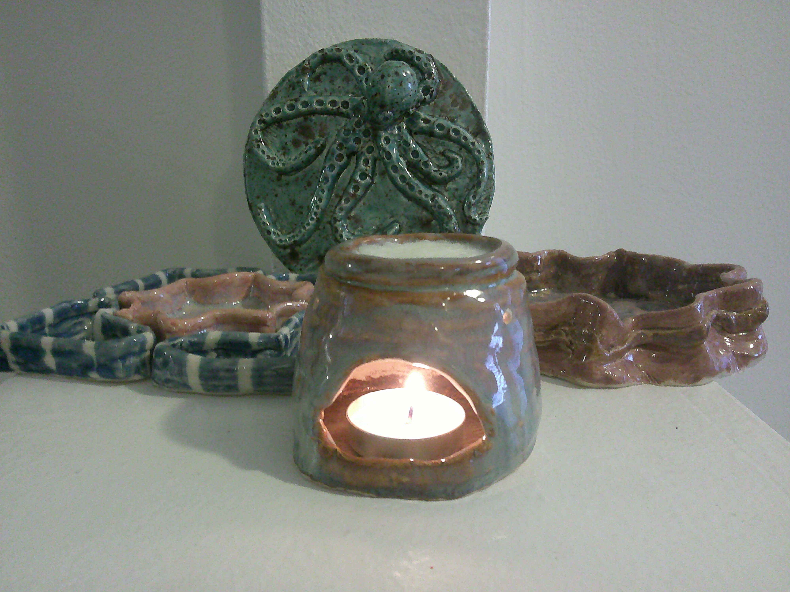
Ceramics
Handbuilding
My projects of a wax melt diffuser, an incense burner,various sea creatures, and trinket and modular dishes have been great practice in designing and using me hands to create a 3D form.

Sewing
Sewing
My projects of a small tote, pouch, doll skirt, and skirt with pockets have been the beginnings to developing my skills in hand and machine sewing.
Years of Education
Projects Done
Years of Experience
Rolls Developed
FILM PHOTOGRAPHY
Photos I've taken, developed, and scanned myself!
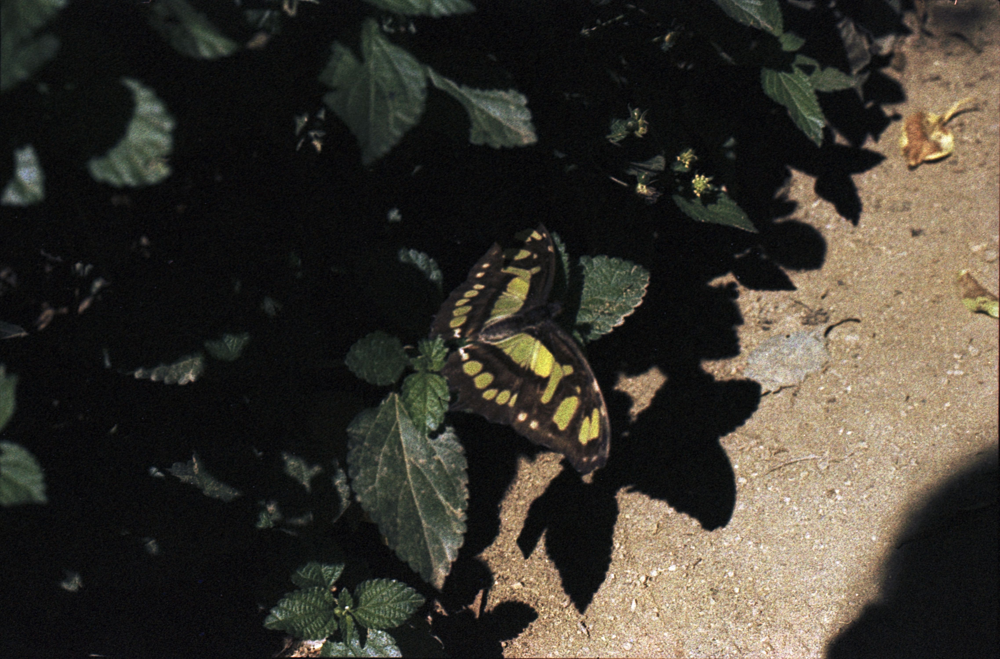
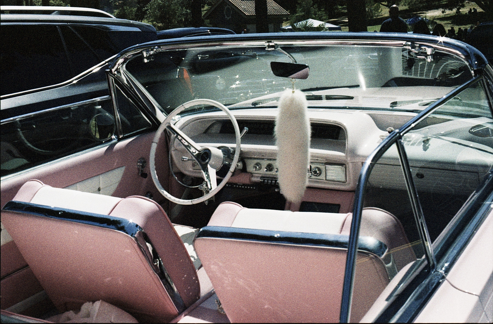
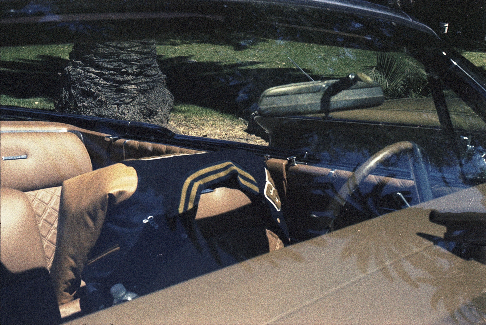
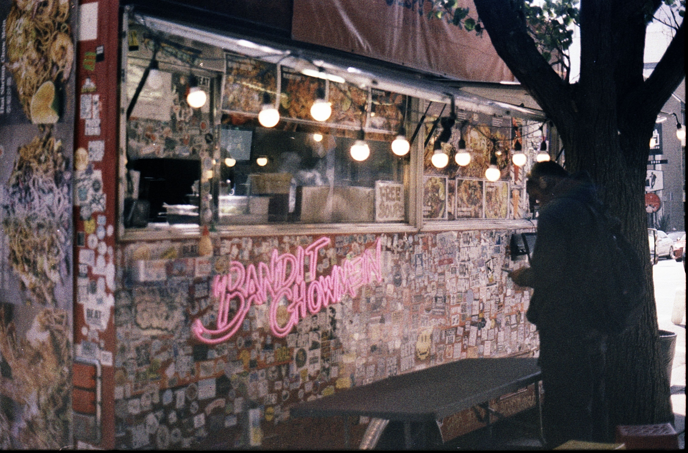
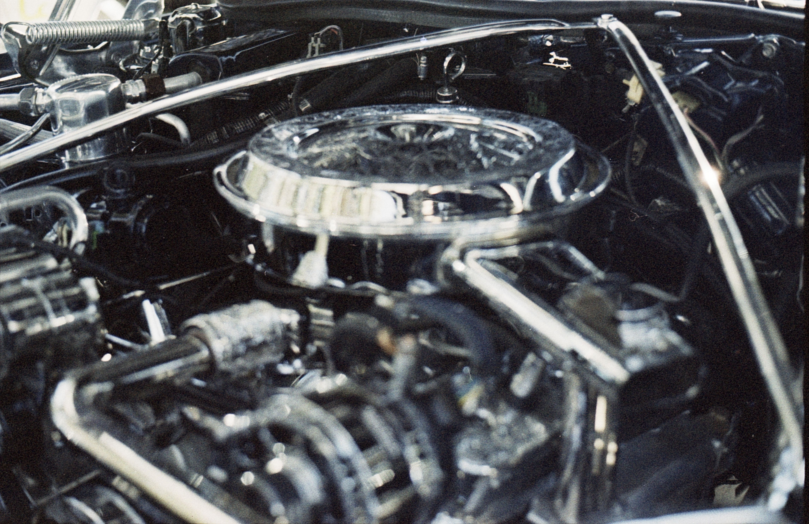
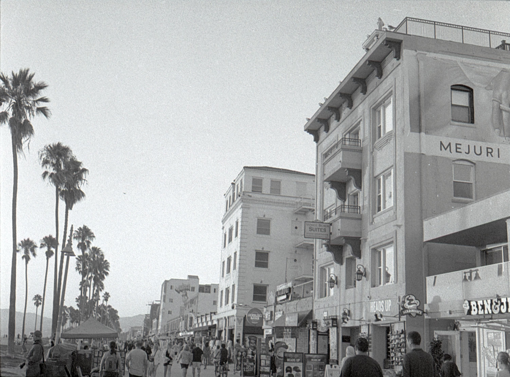
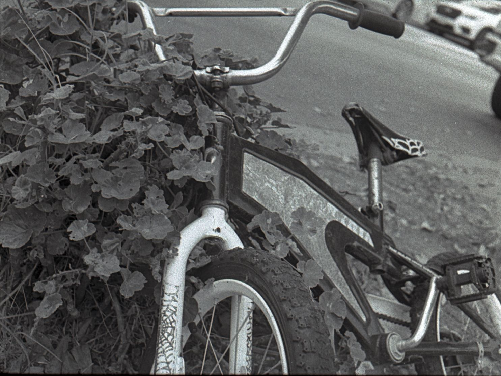
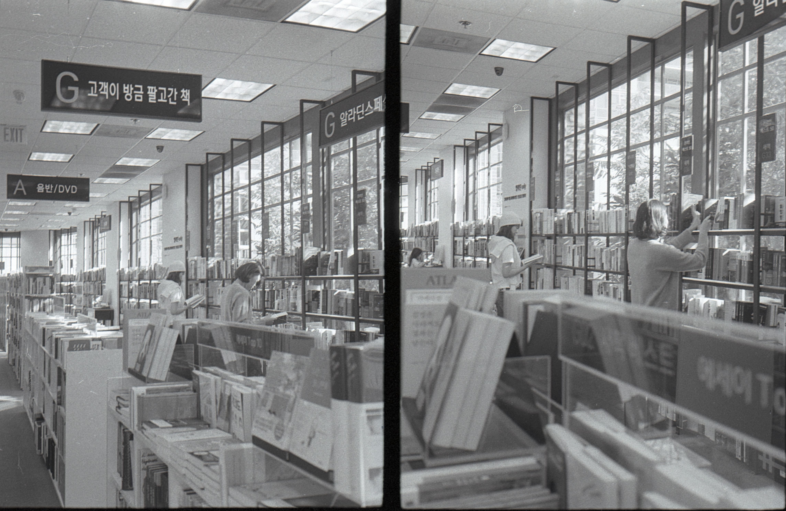